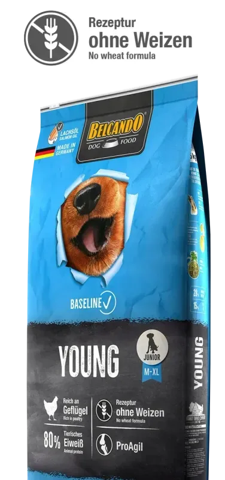
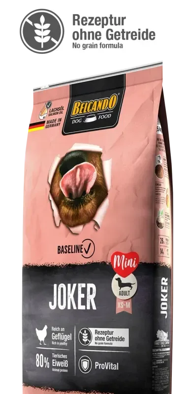
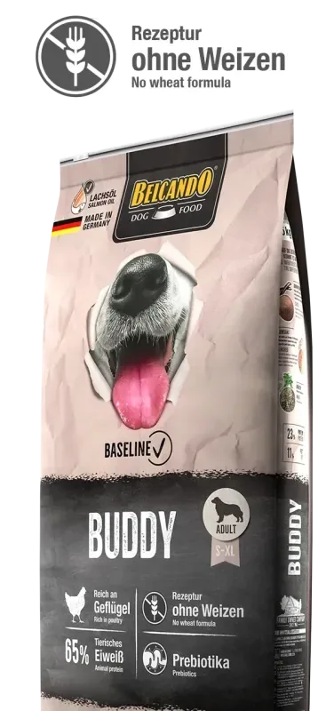

01
Referencia de catálogo
Belcando Baseline Young
Referencia publicada en el catálogo Belcando de Dog City. Presentación y disponibilidad por confirmar.

Imagen publicada por Dog CityAlimento, arena y accesorios para perros y gatos. Una lista de reposición antes de que algo haga falta.
Guarda tus referencias en una lista local y prepara el siguiente paso. Precios, variantes y existencias se revisan en cada ficha oficial.
Referencia publicada en el catálogo Belcando de Dog City. Presentación y disponibilidad por confirmar.

Referencia publicada en el catálogo Belcando de Dog City. Presentación y disponibilidad por confirmar.

Referencia publicada en el catálogo Belcando de Dog City. Presentación y disponibilidad por confirmar.
Tienda online de alimentos, arena y accesorios; publica cuatro sucursales locales y envíos nacionales.
Prueba cantidades y condiciones. Obtén un resumen local para revisar antes de hablar con la empresa.
Datos revisados el 3 de noviembre de 2026. La empresa confirma cualquier condición vigente.
Referencia publicada en el catálogo Belcando de Dog City. Presentación y disponibilidad por confirmar.
Referencia publicada en el catálogo Belcando de Dog City. Presentación y disponibilidad por confirmar.
Referencia publicada en el catálogo Belcando de Dog City. Presentación y disponibilidad por confirmar.
La página de ubicaciones publica sucursales además de la tienda online.
El sitio enumera Vistares, Atanasio, Megacentro y Mix San Cristóbal.
La página anuncia envíos en Guatemala; verificar cobertura y condiciones al comprar.
El sitio muestra categorías y acceso al catálogo de productos.
No. Solo calcula cobertura con el consumo indicado por el usuario; la dieta requiere orientación profesional.